Summary
This experiment investigates ergonomic workstation setup. Central composite design to minimize discomfort and maximize productivity by tuning desk height, monitor distance, chair angle, and break frequency.
The design varies 4 factors: desk height cm (cm), ranging from 65 to 80, monitor dist cm (cm), ranging from 50 to 80, chair recline deg (deg), ranging from 90 to 115, and break freq min (min), ranging from 25 to 90. The goal is to optimize 2 responses: comfort score (pts) (maximize) and productivity pct (%) (maximize). Fixed conditions held constant across all runs include monitor size = 27in, chair type = ergonomic.
A Central Composite Design (CCD) was selected to fit a full quadratic response surface model, including curvature and interaction effects. With 4 factors this produces 32 runs including center points and axial (star) points that extend beyond the factorial range.
Quadratic response surface models were fitted to capture potential curvature and factor interactions. The RSM contour plots below visualize how pairs of factors jointly affect each response.
Key Findings
For comfort score, the most influential factors were break freq min (34.2%), chair recline deg (25.3%), desk height cm (20.9%). The best observed value was 7.4 (at desk height cm = 72.5, monitor dist cm = 32.1366, chair recline deg = 102.5).
For productivity pct, the most influential factors were chair recline deg (28.9%), monitor dist cm (26.8%), break freq min (26.8%). The best observed value was 100.0 (at desk height cm = 72.5, monitor dist cm = 32.1366, chair recline deg = 102.5).
Recommended Next Steps
- Run confirmation experiments at the predicted optimal settings to validate the model.
- Consider whether any fixed factors should be varied in a future study.
Experimental Setup
Factors
| Factor | Low | High | Unit |
|---|
desk_height_cm | 65 | 80 | cm |
monitor_dist_cm | 50 | 80 | cm |
chair_recline_deg | 90 | 115 | deg |
break_freq_min | 25 | 90 | min |
Fixed: monitor_size = 27in, chair_type = ergonomic
Responses
| Response | Direction | Unit |
|---|
comfort_score | ↑ maximize | pts |
productivity_pct | ↑ maximize | % |
Configuration
{
"metadata": {
"name": "Ergonomic Workstation Setup",
"description": "Central composite design to minimize discomfort and maximize productivity by tuning desk height, monitor distance, chair angle, and break frequency"
},
"factors": [
{
"name": "desk_height_cm",
"levels": [
"65",
"80"
],
"type": "continuous",
"unit": "cm"
},
{
"name": "monitor_dist_cm",
"levels": [
"50",
"80"
],
"type": "continuous",
"unit": "cm"
},
{
"name": "chair_recline_deg",
"levels": [
"90",
"115"
],
"type": "continuous",
"unit": "deg"
},
{
"name": "break_freq_min",
"levels": [
"25",
"90"
],
"type": "continuous",
"unit": "min"
}
],
"fixed_factors": {
"monitor_size": "27in",
"chair_type": "ergonomic"
},
"responses": [
{
"name": "comfort_score",
"optimize": "maximize",
"unit": "pts"
},
{
"name": "productivity_pct",
"optimize": "maximize",
"unit": "%"
}
],
"settings": {
"operation": "central_composite",
"test_script": "use_cases/111_ergonomic_workstation/sim.sh"
}
}
Experimental Matrix
The Central Composite Design produces 32 runs. Each row is one experiment with specific factor settings.
| Run | desk_height_cm | monitor_dist_cm | chair_recline_deg | break_freq_min |
|---|
| 1 | 72.5 | 65 | 102.5 | -13.7039 |
| 2 | 65 | 80 | 90 | 90 |
| 3 | 80 | 50 | 115 | 25 |
| 4 | 80 | 80 | 115 | 90 |
| 5 | 72.5 | 65 | 129.886 | 57.5 |
| 6 | 80 | 50 | 115 | 90 |
| 7 | 72.5 | 32.1366 | 102.5 | 57.5 |
| 8 | 65 | 80 | 115 | 25 |
| 9 | 72.5 | 65 | 102.5 | 57.5 |
| 10 | 80 | 80 | 90 | 25 |
| 11 | 72.5 | 65 | 102.5 | 57.5 |
| 12 | 80 | 50 | 90 | 90 |
| 13 | 72.5 | 65 | 102.5 | 57.5 |
| 14 | 80 | 80 | 115 | 25 |
| 15 | 72.5 | 65 | 75.1139 | 57.5 |
| 16 | 56.0683 | 65 | 102.5 | 57.5 |
| 17 | 72.5 | 65 | 102.5 | 57.5 |
| 18 | 65 | 50 | 90 | 90 |
| 19 | 80 | 80 | 90 | 90 |
| 20 | 72.5 | 65 | 102.5 | 57.5 |
| 21 | 65 | 50 | 115 | 25 |
| 22 | 72.5 | 65 | 102.5 | 57.5 |
| 23 | 88.9317 | 65 | 102.5 | 57.5 |
| 24 | 65 | 50 | 115 | 90 |
| 25 | 72.5 | 65 | 102.5 | 57.5 |
| 26 | 65 | 80 | 90 | 25 |
| 27 | 72.5 | 65 | 102.5 | 128.704 |
| 28 | 72.5 | 65 | 102.5 | 57.5 |
| 29 | 80 | 50 | 90 | 25 |
| 30 | 72.5 | 97.8634 | 102.5 | 57.5 |
| 31 | 65 | 50 | 90 | 25 |
| 32 | 65 | 80 | 115 | 90 |
Step-by-Step Workflow
1
Preview the design
$ doe info --config use_cases/111_ergonomic_workstation/config.json
2
Generate the runner script
$ doe generate --config use_cases/111_ergonomic_workstation/config.json \
--output use_cases/111_ergonomic_workstation/results/run.sh --seed 42
3
Execute the experiments
$ bash use_cases/111_ergonomic_workstation/results/run.sh
4
Analyze results
$ doe analyze --config use_cases/111_ergonomic_workstation/config.json
5
Get optimization recommendations
$ doe optimize --config use_cases/111_ergonomic_workstation/config.json
6
Multi-objective optimization
With 2 competing responses, use --multi to find the best compromise via Derringer–Suich desirability.
$ doe optimize --config use_cases/111_ergonomic_workstation/config.json --multi
7
Generate the HTML report
$ doe report --config use_cases/111_ergonomic_workstation/config.json \
--output use_cases/111_ergonomic_workstation/results/report.html
Features Exercised
| Feature | Value |
|---|
| Design type | central_composite |
| Factor types | continuous (all 4) |
| Arg style | double-dash |
| Responses | 2 (comfort_score ↑, productivity_pct ↑) |
| Total runs | 32 |
Analysis Results
Generated from actual experiment runs using the DOE Helper Tool.
Response: comfort_score
Top factors: break_freq_min (34.2%), chair_recline_deg (25.3%), desk_height_cm (20.9%).
ANOVA
| Source | DF | SS | MS | F | p-value |
|---|
| Source | DF | SS | MS | F | p-value |
| desk_height_cm | 4 | 5.4325 | 1.3581 | 0.926 | 0.4749 |
| monitor_dist_cm | 4 | 4.2336 | 1.0584 | 0.721 | 0.5906 |
| chair_recline_deg | 4 | 5.5225 | 1.3806 | 0.941 | 0.4671 |
| break_freq_min | 4 | 27.7736 | 6.9434 | 4.733 | 0.0114 |
| Lack | of | Fit | 8 | 13.7011 | 1.7126 |
| Pure | Error | 7 | 10.2688 | | |
| Error | 15 | 23.9699 | 1.4670 | | |
| Total | 31 | 66.9322 | 2.1591 | | |
Pareto Chart
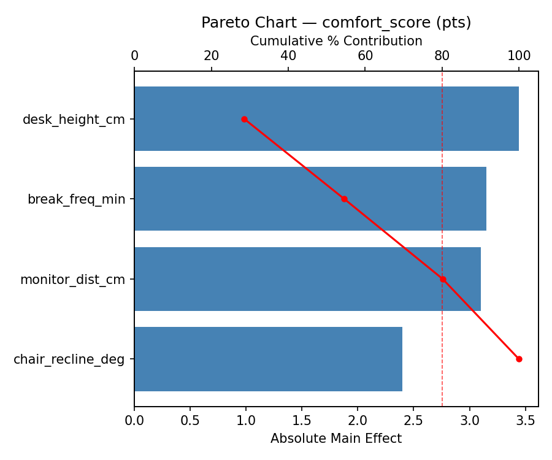
Main Effects Plot
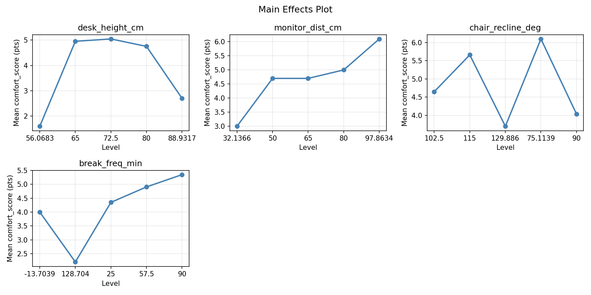
Normal Probability Plot of Effects

Half-Normal Plot of Effects
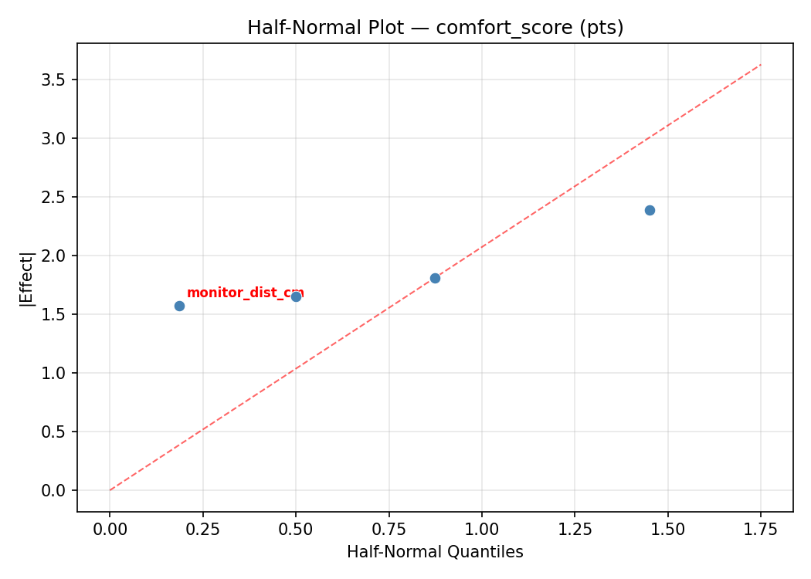
Model Diagnostics
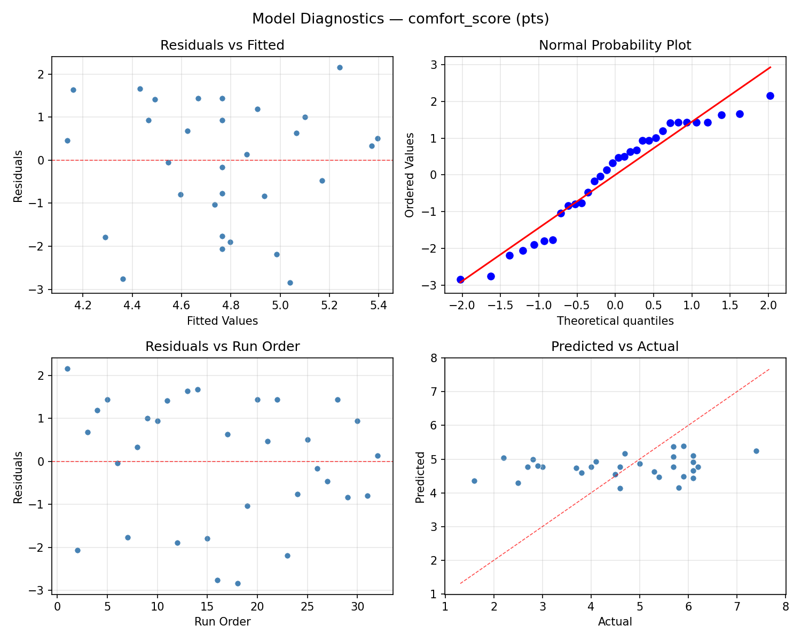
Response: productivity_pct
Top factors: chair_recline_deg (28.9%), monitor_dist_cm (26.8%), break_freq_min (26.8%).
ANOVA
| Source | DF | SS | MS | F | p-value |
|---|
| Source | DF | SS | MS | F | p-value |
| desk_height_cm | 4 | 57.9464 | 14.4866 | 2.543 | 0.0830 |
| monitor_dist_cm | 4 | 70.5179 | 17.6295 | 3.095 | 0.0481 |
| chair_recline_deg | 4 | 92.7679 | 23.1920 | 4.071 | 0.0198 |
| break_freq_min | 4 | 147.9464 | 36.9866 | 6.493 | 0.0031 |
| Lack | of | Fit | 8 | 9.8214 | 1.2277 |
| Pure | Error | 7 | 39.8750 | | |
| Error | 15 | 49.6964 | 5.6964 | | |
| Total | 31 | 418.8750 | 13.5121 | | |
Pareto Chart

Main Effects Plot

Normal Probability Plot of Effects
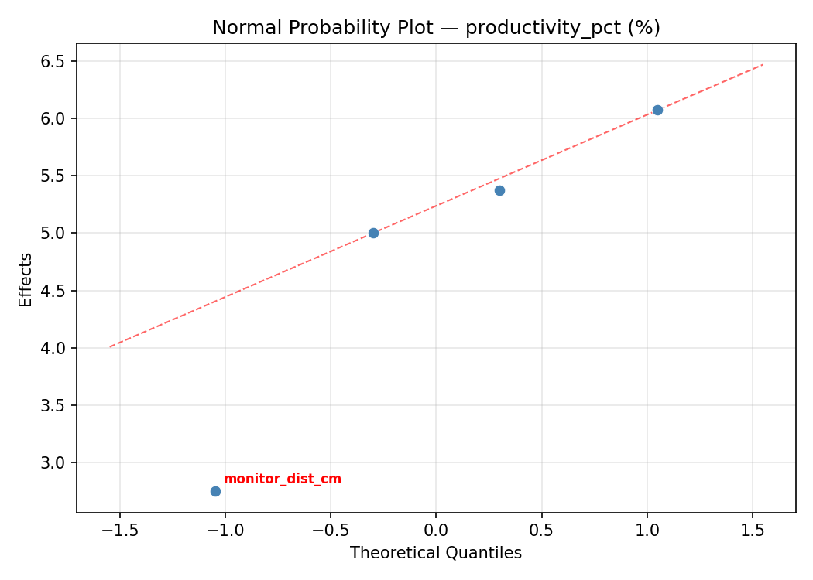
Half-Normal Plot of Effects
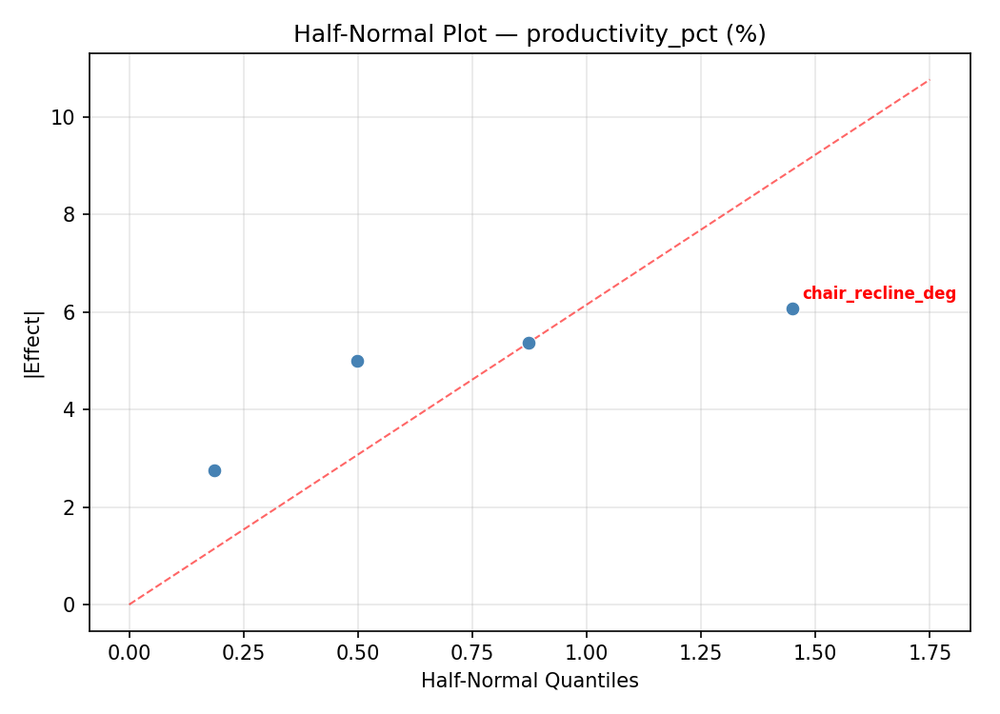
Model Diagnostics
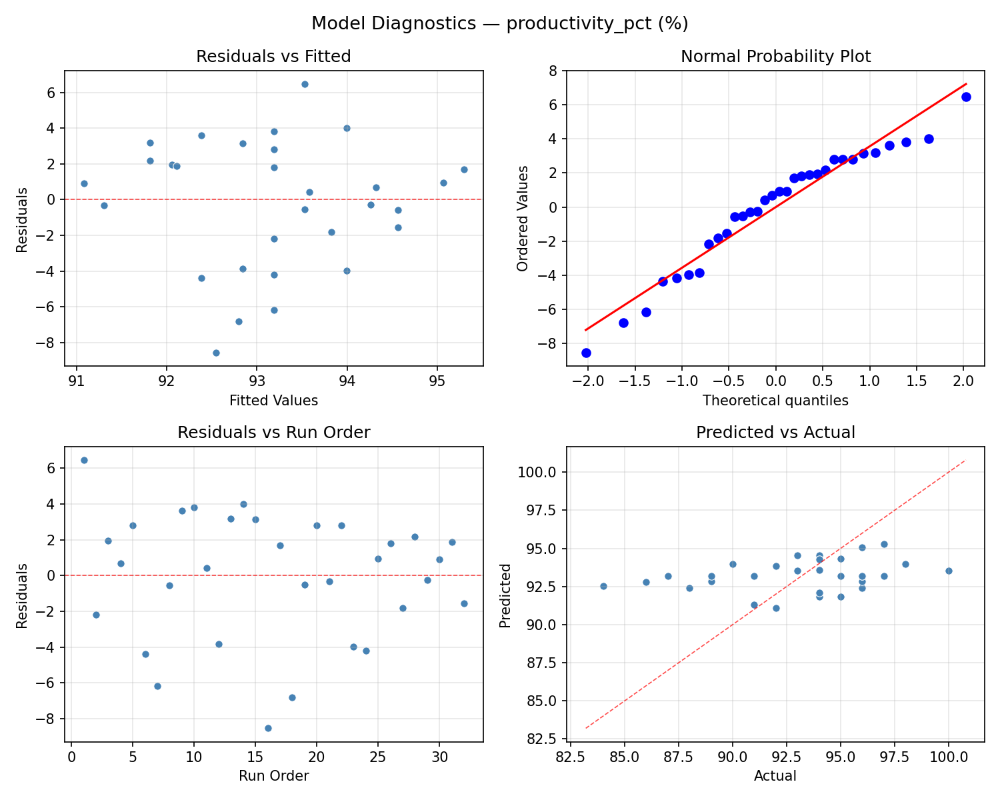
Response Surface Plots
3D surfaces fitted with quadratic RSM. Red dots are observed data points.
comfort score chair recline deg vs break freq min

comfort score desk height cm vs break freq min

comfort score desk height cm vs chair recline deg
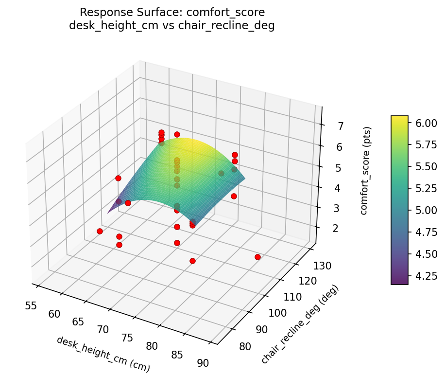
comfort score desk height cm vs monitor dist cm
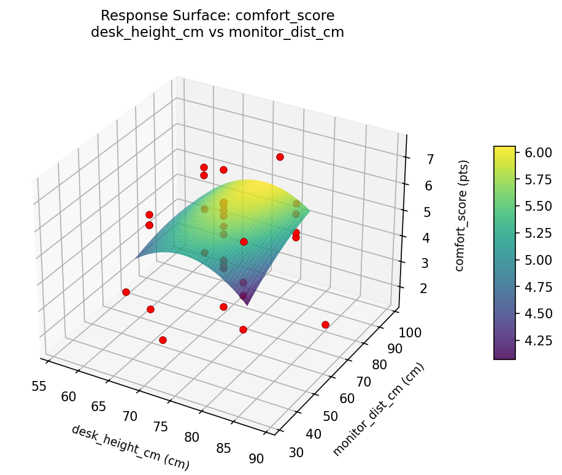
comfort score monitor dist cm vs break freq min

comfort score monitor dist cm vs chair recline deg
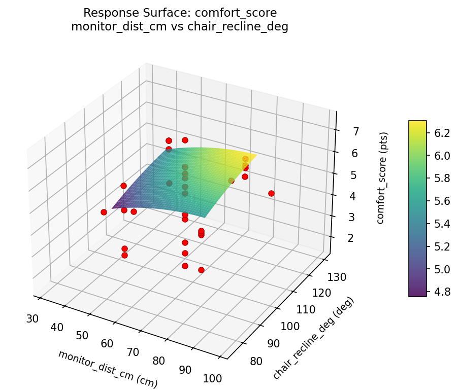
productivity pct chair recline deg vs break freq min
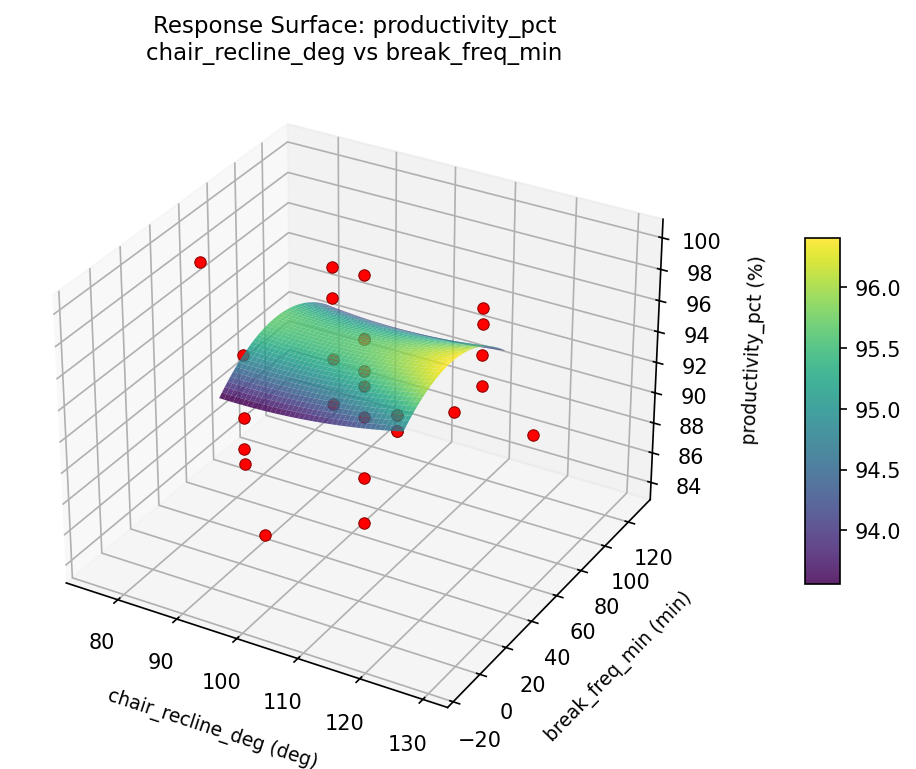
productivity pct desk height cm vs break freq min
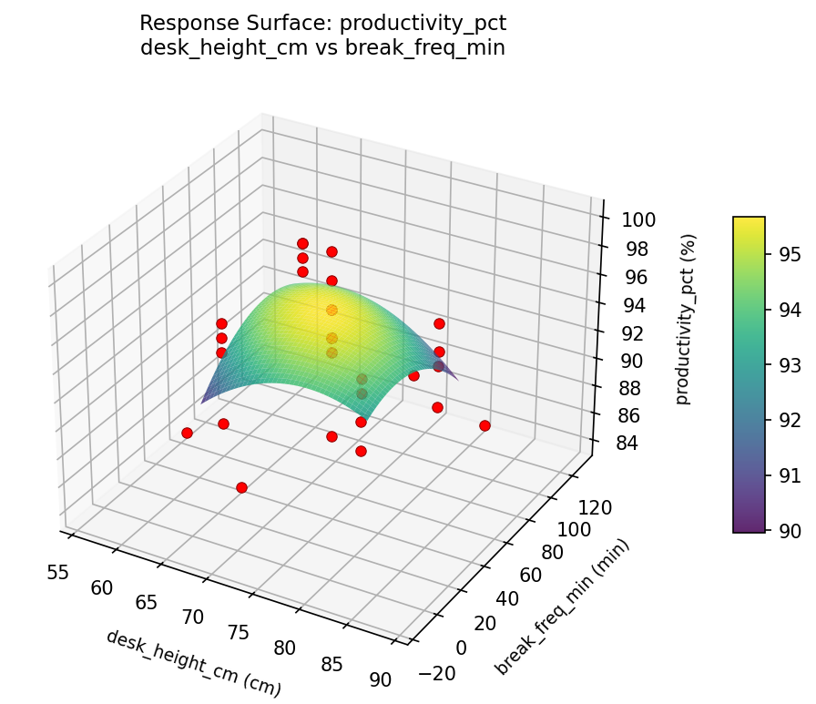
productivity pct desk height cm vs chair recline deg

productivity pct desk height cm vs monitor dist cm

productivity pct monitor dist cm vs break freq min
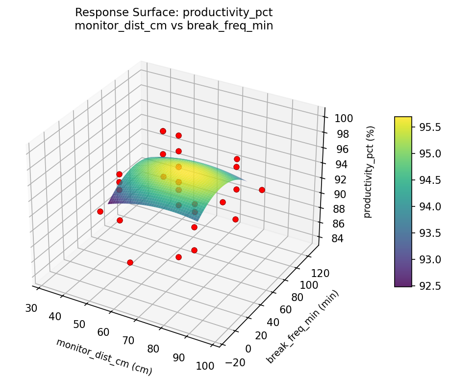
productivity pct monitor dist cm vs chair recline deg
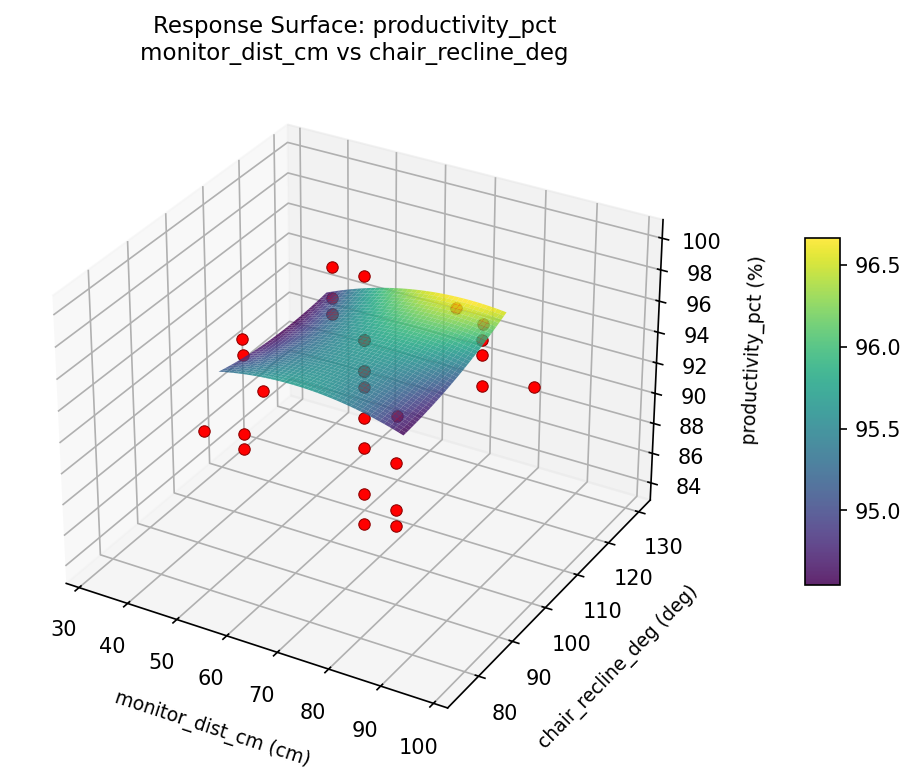
Multi-Objective Optimization
When responses compete, Derringer–Suich desirability finds the best compromise.
Each response is scaled to a 0–1 desirability, then combined via a weighted geometric mean.
Overall Desirability
D = 0.9545
Per-Response Desirability
| Response | Weight | Desirability | Predicted | Dir |
|---|
comfort_score |
1.5 |
|
7.40 0.9545 7.40 pts |
↑ |
productivity_pct |
1.5 |
|
100.00 0.9545 100.00 % |
↑ |
Recommended Settings
| Factor | Value |
|---|
desk_height_cm | 88.9317 cm |
monitor_dist_cm | 65 cm |
chair_recline_deg | 102.5 deg |
break_freq_min | 57.5 min |
Source: from observed run #1
Trade-off Summary
Sacrifice = how much worse than single-objective best.
| Response | Predicted | Best Observed | Sacrifice |
|---|
productivity_pct | 100.00 | 100.00 | +0.00 |
Top 3 Runs by Desirability
| Run | D | Factor Settings |
|---|
| #14 | 0.7946 | desk_height_cm=72.5, monitor_dist_cm=65, chair_recline_deg=75.1139, break_freq_min=57.5 |
| #5 | 0.7466 | desk_height_cm=65, monitor_dist_cm=50, chair_recline_deg=115, break_freq_min=25 |
Model Quality
| Response | R² | Type |
|---|
productivity_pct | 0.0843 | linear |
Full Multi-Objective Output
============================================================
MULTI-OBJECTIVE OPTIMIZATION
Method: Derringer-Suich Desirability Function
============================================================
Overall desirability: D = 0.9545
Response Weight Desirability Predicted Direction
---------------------------------------------------------------------
comfort_score 1.5 0.9545 7.40 pts ↑
productivity_pct 1.5 0.9545 100.00 % ↑
Recommended settings:
desk_height_cm = 88.9317 cm
monitor_dist_cm = 65 cm
chair_recline_deg = 102.5 deg
break_freq_min = 57.5 min
(from observed run #1)
Trade-off summary:
comfort_score: 7.40 (best observed: 7.40, sacrifice: +0.00)
productivity_pct: 100.00 (best observed: 100.00, sacrifice: +0.00)
Model quality:
comfort_score: R² = 0.0225 (linear)
productivity_pct: R² = 0.0843 (linear)
Top 3 observed runs by overall desirability:
1. Run #1 (D=0.9545): desk_height_cm=88.9317, monitor_dist_cm=65, chair_recline_deg=102.5, break_freq_min=57.5
2. Run #14 (D=0.7946): desk_height_cm=72.5, monitor_dist_cm=65, chair_recline_deg=75.1139, break_freq_min=57.5
3. Run #5 (D=0.7466): desk_height_cm=65, monitor_dist_cm=50, chair_recline_deg=115, break_freq_min=25
Full Analysis Output
=== Main Effects: comfort_score ===
Factor Effect Std Error % Contribution
--------------------------------------------------------------
break_freq_min 2.9750 0.2598 34.2%
chair_recline_deg 2.2000 0.2598 25.3%
desk_height_cm 1.8125 0.2598 20.9%
monitor_dist_cm 1.7000 0.2598 19.6%
=== ANOVA Table: comfort_score ===
Source DF SS MS F p-value
-----------------------------------------------------------------------------
desk_height_cm 4 5.4325 1.3581 0.926 0.4749
monitor_dist_cm 4 4.2336 1.0584 0.721 0.5906
chair_recline_deg 4 5.5225 1.3806 0.941 0.4671
break_freq_min 4 27.7736 6.9434 4.733 0.0114
Lack of Fit 8 13.7011 1.7126 1.167 0.4256
Pure Error 7 10.2688 1.4670
Error 15 23.9699 1.4670
Total 31 66.9322 2.1591
=== Summary Statistics: comfort_score ===
desk_height_cm:
Level N Mean Std Min Max
------------------------------------------------------------
56.0683 1 6.1000 0.0000 6.1000 6.1000
65 8 4.6375 1.9257 1.6000 7.4000
72.5 14 4.9357 1.2744 2.5000 6.2000
80 8 4.2875 1.4357 2.7000 6.2000
88.9317 1 5.9000 0.0000 5.9000 5.9000
monitor_dist_cm:
Level N Mean Std Min Max
------------------------------------------------------------
32.1366 1 5.3000 0.0000 5.3000 5.3000
50 8 4.5250 1.3014 2.8000 6.2000
65 14 4.9786 1.2974 2.5000 6.2000
80 8 4.4000 2.0340 1.6000 7.4000
97.8634 1 6.1000 0.0000 6.1000 6.1000
chair_recline_deg:
Level N Mean Std Min Max
------------------------------------------------------------
102.5 14 5.0643 1.2616 2.5000 6.1000
115 8 4.3625 1.9690 1.6000 7.4000
129.886 1 6.2000 0.0000 6.2000 6.2000
75.1139 1 4.0000 0.0000 4.0000 4.0000
90 8 4.5625 1.3928 2.2000 6.2000
break_freq_min:
Level N Mean Std Min Max
------------------------------------------------------------
-13.7039 1 2.5000 0.0000 2.5000 2.5000
128.704 1 4.1000 0.0000 4.1000 4.1000
25 8 3.4500 1.4619 1.6000 5.7000
57.5 14 5.3214 1.0628 2.9000 6.2000
90 8 5.4750 1.1659 3.7000 7.4000
=== Main Effects: productivity_pct ===
Factor Effect Std Error % Contribution
--------------------------------------------------------------
chair_recline_deg 7.0000 0.6498 28.9%
monitor_dist_cm 6.5000 0.6498 26.8%
break_freq_min 6.5000 0.6498 26.8%
desk_height_cm 4.2500 0.6498 17.5%
=== ANOVA Table: productivity_pct ===
Source DF SS MS F p-value
-----------------------------------------------------------------------------
desk_height_cm 4 57.9464 14.4866 2.543 0.0830
monitor_dist_cm 4 70.5179 17.6295 3.095 0.0481
chair_recline_deg 4 92.7679 23.1920 4.071 0.0198
break_freq_min 4 147.9464 36.9866 6.493 0.0031
Lack of Fit 8 9.8214 1.2277 0.216 0.9767
Pure Error 7 39.8750 5.6964
Error 15 49.6964 5.6964
Total 31 418.8750 13.5121
=== Summary Statistics: productivity_pct ===
desk_height_cm:
Level N Mean Std Min Max
------------------------------------------------------------
56.0683 1 96.0000 0.0000 96.0000 96.0000
65 8 91.7500 5.0920 84.0000 100.0000
72.5 14 94.4286 2.5933 89.0000 98.0000
80 8 92.0000 3.6253 87.0000 97.0000
88.9317 1 94.0000 0.0000 94.0000 94.0000
monitor_dist_cm:
Level N Mean Std Min Max
------------------------------------------------------------
32.1366 1 94.0000 0.0000 94.0000 94.0000
50 8 92.2500 3.0119 87.0000 96.0000
65 14 94.2857 2.4315 89.0000 97.0000
80 8 91.5000 5.4511 84.0000 100.0000
97.8634 1 98.0000 0.0000 98.0000 98.0000
chair_recline_deg:
Level N Mean Std Min Max
------------------------------------------------------------
102.5 14 94.7857 2.0821 89.0000 98.0000
115 8 92.3750 5.2898 84.0000 100.0000
129.886 1 96.0000 0.0000 96.0000 96.0000
75.1139 1 89.0000 0.0000 89.0000 89.0000
90 8 91.3750 3.2486 86.0000 96.0000
break_freq_min:
Level N Mean Std Min Max
------------------------------------------------------------
-13.7039 1 96.0000 0.0000 96.0000 96.0000
128.704 1 94.0000 0.0000 94.0000 94.0000
25 8 89.5000 3.5051 84.0000 94.0000
57.5 14 94.4286 2.5933 89.0000 98.0000
90 8 94.2500 3.7321 88.0000 100.0000
Optimization Recommendations
=== Optimization: comfort_score ===
Direction: maximize
Best observed run: #1
desk_height_cm = 72.5
monitor_dist_cm = 32.1366
chair_recline_deg = 102.5
break_freq_min = 57.5
Value: 7.4
RSM Model (linear, R² = 0.0803, Adj R² = -0.0559):
Coefficients:
intercept +4.7656
desk_height_cm +0.1682
monitor_dist_cm -0.2326
chair_recline_deg -0.0800
break_freq_min -0.3483
RSM Model (quadratic, R² = 0.3420, Adj R² = -0.1999):
Coefficients:
intercept +4.9793
desk_height_cm +0.1682
monitor_dist_cm -0.2326
chair_recline_deg -0.0800
break_freq_min -0.3483
desk_height_cm*monitor_dist_cm -0.1375
desk_height_cm*chair_recline_deg +0.1000
desk_height_cm*break_freq_min -0.1000
monitor_dist_cm*chair_recline_deg +0.5625
monitor_dist_cm*break_freq_min +0.6125
chair_recline_deg*break_freq_min -0.2000
desk_height_cm^2 -0.1892
monitor_dist_cm^2 +0.2067
chair_recline_deg^2 -0.1579
break_freq_min^2 -0.1267
Curvature analysis:
monitor_dist_cm coef=+0.2067 convex (has a minimum)
desk_height_cm coef=-0.1892 concave (has a maximum)
chair_recline_deg coef=-0.1579 concave (has a maximum)
break_freq_min coef=-0.1267 concave (has a maximum)
Notable interactions:
monitor_dist_cm*break_freq_min coef=+0.6125 (synergistic)
monitor_dist_cm*chair_recline_deg coef=+0.5625 (synergistic)
Predicted optimum (from linear model, at observed points):
desk_height_cm = 80
monitor_dist_cm = 50
chair_recline_deg = 90
break_freq_min = 25
Predicted value: 5.5946
Surface optimum (via L-BFGS-B, linear model):
desk_height_cm = 80
monitor_dist_cm = 50
chair_recline_deg = 90
break_freq_min = 25
Predicted value: 5.5946
Model quality: Weak fit — consider adding center points or using a different design.
Factor importance:
1. desk_height_cm (effect: 3.7, contribution: 35.4%)
2. monitor_dist_cm (effect: 2.9, contribution: 27.7%)
3. break_freq_min (effect: 2.7, contribution: 25.8%)
4. chair_recline_deg (effect: 1.2, contribution: 11.1%)
=== Optimization: productivity_pct ===
Direction: maximize
Best observed run: #1
desk_height_cm = 72.5
monitor_dist_cm = 32.1366
chair_recline_deg = 102.5
break_freq_min = 57.5
Value: 100.0
RSM Model (linear, R² = 0.1402, Adj R² = 0.0129):
Coefficients:
intercept +93.1875
desk_height_cm +0.7386
monitor_dist_cm -0.5192
chair_recline_deg -0.4521
break_freq_min -1.1293
RSM Model (quadratic, R² = 0.4573, Adj R² = 0.0103):
Coefficients:
intercept +93.6193
desk_height_cm +0.7386
monitor_dist_cm -0.5192
chair_recline_deg -0.4521
break_freq_min -1.1293
desk_height_cm*monitor_dist_cm +0.1875
desk_height_cm*chair_recline_deg +1.0625
desk_height_cm*break_freq_min -0.5625
monitor_dist_cm*chair_recline_deg +1.8125
monitor_dist_cm*break_freq_min +1.1875
chair_recline_deg*break_freq_min -1.1875
desk_height_cm^2 -0.4214
monitor_dist_cm^2 +0.2036
chair_recline_deg^2 -0.1089
break_freq_min^2 -0.2131
Curvature analysis:
desk_height_cm coef=-0.4214 concave (has a maximum)
break_freq_min coef=-0.2131 concave (has a maximum)
monitor_dist_cm coef=+0.2036 convex (has a minimum)
chair_recline_deg coef=-0.1089 concave (has a maximum)
Notable interactions:
monitor_dist_cm*chair_recline_deg coef=+1.8125 (synergistic)
monitor_dist_cm*break_freq_min coef=+1.1875 (synergistic)
chair_recline_deg*break_freq_min coef=-1.1875 (antagonistic)
desk_height_cm*chair_recline_deg coef=+1.0625 (synergistic)
desk_height_cm*break_freq_min coef=-0.5625 (antagonistic)
Predicted optimum (from linear model, at observed points):
desk_height_cm = 80
monitor_dist_cm = 50
chair_recline_deg = 90
break_freq_min = 25
Predicted value: 96.0266
Surface optimum (via L-BFGS-B, linear model):
desk_height_cm = 80
monitor_dist_cm = 50
chair_recline_deg = 90
break_freq_min = 25
Predicted value: 96.0266
Model quality: Weak fit — consider adding center points or using a different design.
Factor importance:
1. monitor_dist_cm (effect: 12.0, contribution: 34.3%)
2. desk_height_cm (effect: 10.0, contribution: 28.6%)
3. break_freq_min (effect: 10.0, contribution: 28.6%)
4. chair_recline_deg (effect: 3.0, contribution: 8.6%)